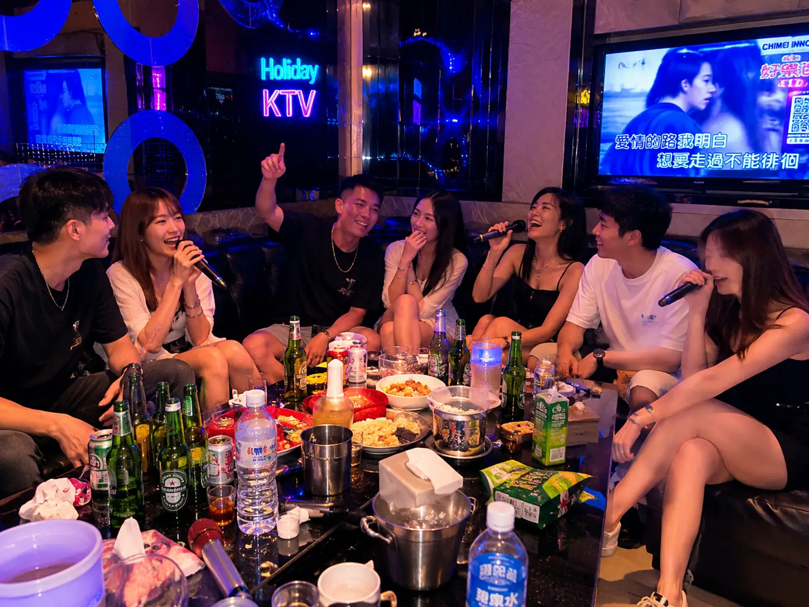

場合選擇決策表：一表找到適合你的模式
| 場合類型 | 推薦等級 | 公關:客人比例 | 費用估算 | 最佳優點 | 適合對象 |
|---|---|---|---|---|---|
| 🎤 KTV 歡唱 | 公關 / 保三 | 1:2 ~ 1:3 | NT$8,000-15,000 | 氣氛最熱、互動性強 | 朋友聚會、慶生 |
| 🏨 Motel 派對 | 保三 / VIP | 1:2 | NT$9,000-20,000 | 絕對隱私、零限制 | 私人派對、情侶場合 |
| 🍽️ 商務飯局 | 保三 / VIP | 1:1 ~ 1:2 | NT$7,000-12,000 | 場面得體、話題引導 | 客戶招待、公關應酬 |
| 🎉 大型派對 | 保三 / VIP | 1:3 ~ 1:4 | NT$12,000-30,000 | 場面撐得住、氣氛佳 | 公司活動、聯誼 |
| 👤 一對一陪伴 | 保三 | 1:1 | NT$3,600-6,000 | 隱私高、話題深入 | 單身客、深度陪伴 |
🎤 KTV 包廂派對
KTV 包廂叫傳播
KTV 是傳播業最熱門的場合，幾乎所有客人第一次叫傳播都是去KTV。公關在KTV環境中最能發揮「帶動氣氛」的專業能力——點歌、玩遊戲、敬酒、聊天，讓聚會絕不冷場。
✅ 優點
- 氣氛最熱絡，互動性強
- 新手最容易上手
- 環境熟悉，壓力小
- 公關最能發揮帶動能力
- 包廂費用相對便宜
⚠️ 注意事項
- 避免太偏僻的私人會館
- 包廂預留足夠時間（3小時起）
- 少數VIP包廂可能限制外賓
🏆 台北 KTV 推薦名單
- 錢櫃（台北各區分店）—— 最主流選擇，干淨明亮
- 好樂迪（連鎖體系）—— 歌曲庫完整，預約方便
- 星聚點（西門/板橋/新莊）—— 年輕族群最愛，包廂新
- 中都瓏煲（大同區）—— 大型包廂，適合多人派對
🏨 Motel 派對場合
汽車旅館叫傳播
Motel 叫傳播是完全合法且常見的服務模式，適合重視隱私、不想出入特種場所的客人。台北的汽車旅館選擇多元，從平價到精品路線都有。
✅ 優點
- 絕對隱私，零外界干擾
- 空間獨立，無時間壓力
- 不需要在公共場所露面
- 環境通常乾淨舒適
- 不受KTV包廂時間限制
⚠️ 安全守則
- 選有前台、流動人流的正規Motel
- 避免偏僻或純自助式場所
- 建議選擇連鎖品牌
🏆 台北 Motel 推薦
- 薇閣（大直/新莊）—— 精品路線，隱私性極高
- 伯爵（中和/新莊）—— 房型多元，價格適中
- Motel 6（三重）—— 經濟實惠，乾淨基本
- 悠活（林口）—— 大空間，適合多人派對
- 預約時告知「Motel到府」，公司會安排適合的公關
🍽️ 商務飯局場合
商務飯局 / 客戶招待
商務飯局是傳播的重要場景之一。適合客戶招待、公司聚餐、節慶聯誼等正式場合。公關在飯局中扮演「社交潤滑劑」的角色，協助點菜、倒酒、引導話題，讓場面自然而不冷場。
✅ 優點
- 場面得體，客戶印象好
- 話題引導，避免冷場
- 餐桌禮儀專業
- 提升整體用餐體驗
- 客戶會記得這次安排
⚠️ 注意事項
- 選有包廂的中高端餐廳
- 避免過於吵雜或米其林餐廳
- 公關需有餐桌禮儀經驗
- 事先告知餐廳「有外賓一同用餐」
🏆 商務飯局餐廳類型推薦
- 中式餐廳包廂—— 桌菜合菜，場面正式
- 日式料理—— 氣氛佳，話題多
- 高檔火鍋—— 互動性強，氣氛輕鬆
- 約會型餐酒館—— 適合小型商務午餐
🎉 大型派對場合
私人派對 / 生日 / 公司活動
派對場合是傳播最能展現「場面統籌」能力的場景。生日派對、公司聯誼、私人聚會，公關除了陪伴互動，還會主動帶動遊戲、主持小活動，讓整場派對High到最高點。
派對人數與公關配置建議
| 派對人數 | 建議公關人數 | 建議等級 | 重點 |
|---|---|---|---|
| 6-8 人 | 2-3 位 | 保三 | 確保每人有足夠互動 |
| 10-15 人 | 3-4 位 | 保三 / VIP | 場面要撐得住 |
| 15-25 人 | 5-8 位 | VIP | 場面調度能力是關鍵 |
| 25 人以上 | 8+ 位 | VIP + 頂級 | 建議與公司詳細討論 |
👤 一對一陪伴場合
單身客 / 深度陪伴
單身客是一對一陪伴服務的最大族群，佔歐巴傳播每日預約的42%。公關受過專業訓練，會主動引導話題、創造舒適氣氛，常見情境包括：陪吃飯、陪逛街、陪聊天、看電影、純粹找人陪伴等。
一對一場合常見情境
- 深夜想找人聊天、喝酒傾訴
- 一個人吃飯太孤單
- 看電影 /逛街需要陪同
- 重要約會場合需要公關陪同撑場面
- 純粹需要陪伴、打發時間
單身客最常問：「一個人叫會不會很尷尬？」
不會。公關的專業就是帶動氣氛、化解尷尬。單身客是最常見的預約類型之一，完全不用擔心。
